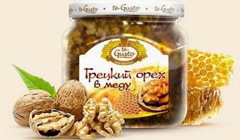
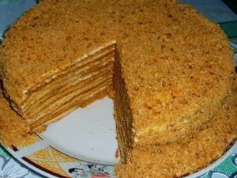

Був ранній ранок, коли втомлений подорожній постукав в двері відокремленого монастиря Тибету. Що змусило його пройти настільки
важку дорогу? Незнайомця привели сюди пошуки еліксиру молодості. Настоятель монастиря розвернув перед мандрівником
висушене часом пальмове листя з древнім рецептом Тибету, який залишили мудрі знахарі.
Чернець узяв жменю сухого звіробою, жменю безсмертника і стільки ж березових нирок для приготування еліксиру.
Дрібно подрібнені трави він склав в мідну чашу, накрив шматком матерії і залишив до вечора. Роботу на створенням
чудодійного напою лама продовжив лише після заходу сонця. Увечері він залив трави окропом і почекав доки вони
віддадуть воді свою цілющу силу. Процідивши настій через тканину, чернець додав найголовнішу складову еліксиру – мед.
Він запропонував мандрівникові приготоване зілля і заборонив до ранку є і пити. Рано вранці, напередодні сходу сонця,
лама підігрів на пару еліксир і знову додав в нього мед. Він запропонував випити відвар мандрівникові до того,
як той приступить до сніданку. «Поступай так щодня і житимеш довго. Я приймаю еліксир довголіття впродовж 115
років», - порадив чернець, прощаючись з мандрівником. Розшифровка рецептів Тибету виробила справжню революцію в
медицині, адже до складу кожного з них обов'язково входив мед.
Найпростішим еліксиром довголіття є суміш волоських горіхів з медом. Сам по собі волоський горіх, або "дерево життя",
як його інколи називають, це вже їда-ліки, а у поєднанні з медом волоські горіхи перетворюються на справжнє
джерело життя. Адже ще древній історик Геродот наділяв волоський горіх особою силоміць, а Авіценна рекомендувала
мед з подрібненими волоськими горіхами для лікування туберкульозу і сильного виснаження. Ось декілька простих
рецептів, які зможуть підтримати ваше здоров'я.
- Для боротьби з паразитами внутрішніх органів з медом змішують перемелені зелені плоди волоського горіха.
- Для підвищення потенції 100гр ядер волоського горіха змішують з медом і приймають за 2 години до відходу до сну.
- При лікуванні туберкульозу один з кращих засобів - суміш меду з волоськими горіхами.
- Для лікування і дезинфекції порожнини рота і горла сок шкірки волоського горіха приймають в суміші з медом.
- 4-5 волоських горіхів з медом в день, із слів американського доктора Д.Гейла, усувають дію радіації.
У всіх перерахованих випадках мед виступає в ролі провідника, що підводить корисні речовини волоського горіха до
вогнища захворювання. Завдяки меду цілющі властивості волоського горіха багато разів посилюються і набувають здатності
проникати в саму в мембрану клітки. Якщо додати в суміш меду і волоського горіха родзинки, то вийде еліксир, що
прекрасно зціляє від серцево-судинних захворювань, підвищує еластичність судин і що запобігає утворенню бляшок холестеринів.
Мед і горіхи. Говорять, що саме ці продукти залишили нам Боги в ті далекі часи, коли вони нарівні з людьми ходили по Землі.
Не втрачайте даремно часу, приступайте до приготування смачних і корисних ласощів. Вживайте щодня еліксир довголіття на основі
меду з волоськими горіхами і результати не змусять себе довго чекати. Адже лише своїми власними зусиллями ми
зможемо зберегти і укріпити наше здоров'я.

Сьогодні я поділюся рецептом свого улюбленого тортика «Медяника», до складу якого входить мед. Коди-то в далекому і
безтурботному дитинстві медяником мене частенько балувала бабуся, так що можна сказати рецепт родинний.
Рецепт простій, інгредієнти доступні і що важливо – натуральні. Думаю результат вашої праці приємно здивує навіть
найвередливіших гостей, а нескінченний потік компліментів в адресу ваших кулінарних здібностей порадує і вас.
Отже для приготування нам знадобляться такі продукти:
• Мед (для тесту) – три їдалень ложки;
• Цукор (для тесту) – один стакан;
• Яйце (для тесту) — три штуки;
• Вершкове масло (для тесту) — сто гр;
• Сода гашеная (для тесту) — дві чайних ложки;
• Пшеничне борошно вищого гатунку (її потрібно рівно стільки, щоб тісто не було надмірно тугим );
• Сметана (для крема+сахар) — 0,7- 0,8 літра;
Готуємо тісто для нашого медяника. Яйця збиваємо з цукром і додаємо мед. Якщо у вас є достатня кількість меду,
то для додання медянику натуральності рекомендую замінити цукор стаканом меду. Сюди ж додаємо розтоплене на водяній лазні
вершкове масло і гашеную соду. Всю цю суміш, помішуючи, витримуємо хвилин сім на водяній лазні, після чого знімаємо
і даємо їй трошки остигнути. Поступово додаючи муку, замішуємо тісто. Ділимо приготоване тісто на дванадцять частин
і розкочуємо кожну з них в коржик завтовшки 3 мм. Тісто швидко висихає, тому розкочуйте його швидко і накривайте рушником.
Готуємо крем. Перш ніж збивати сметану з цукром, заздалегідь її слід гарненько охолодити, як і посуд в якій збиватимете крем.
Збивати сметану потрібно акуратно, так щоб вона не перетворилася на масло. Цукор підсипаємо в сметану тонкою цівкою
до тих пір, поки сметана не стане густою і на ваш смак солодкої.
Готуємо коржі. Коржі запікаємо в духовці при температурі 150-180 градусів. Кожен з 12-ти коржів обрізуємо під розмір блюда, поки вони теплі.
Обрізання, що залишилися від коржів, перетираємо в крихту, вона нам ще знадобиться.
Готуємо торт. Рясно змащуємо коржі з обох боків кремом, пересипаємо подрібненим арахісом і складаємо в стопку. Зверху посипаємо крихтою
від коржів і ставимо на добу або хоч би на ніч в холодильник. Сподіваюся вам сподобається. Смачного!